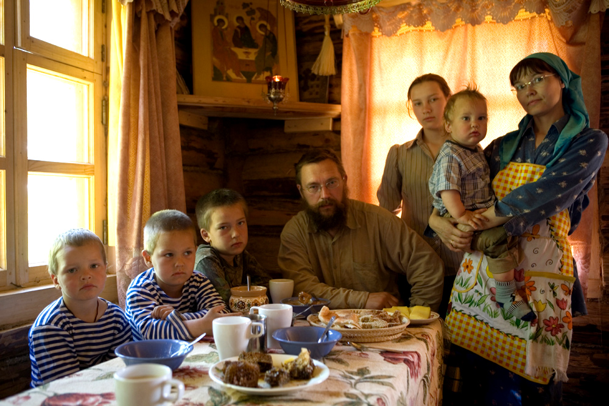
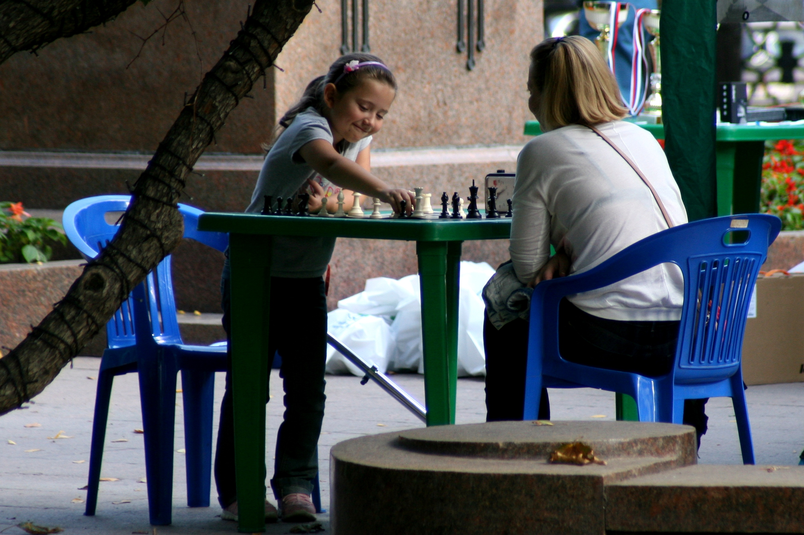
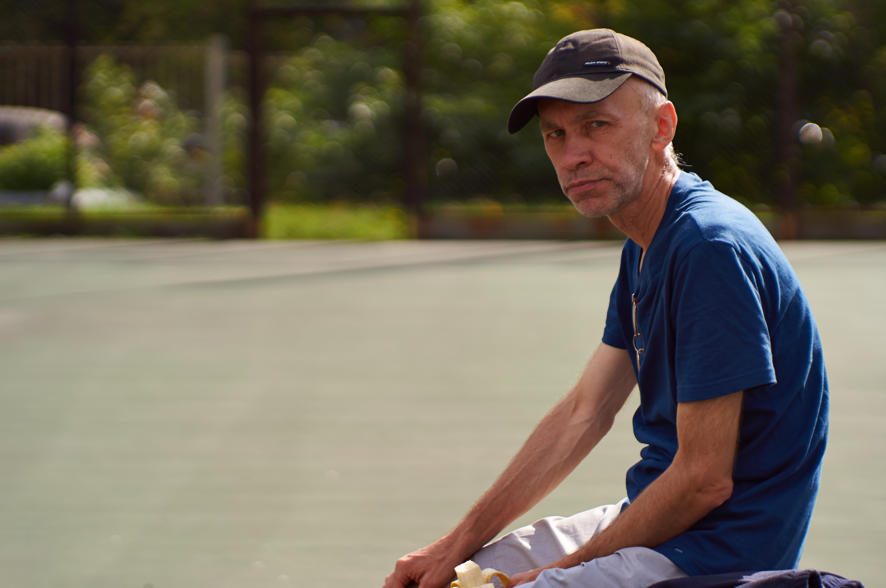
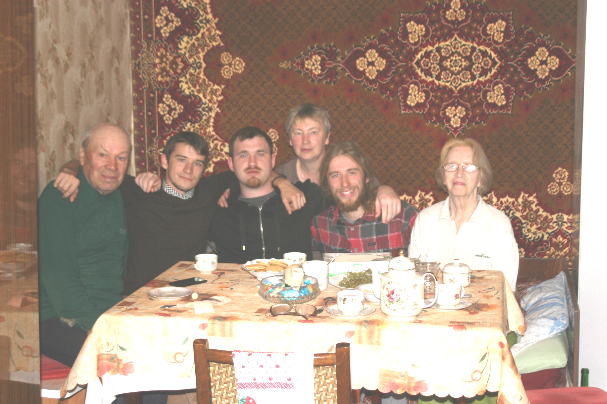
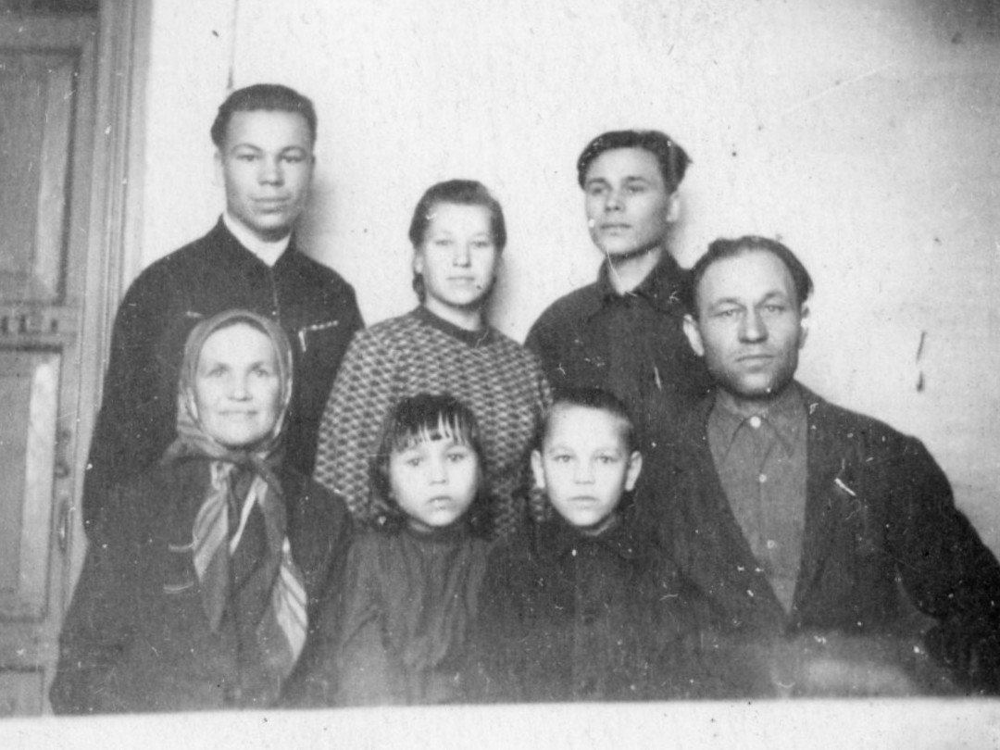
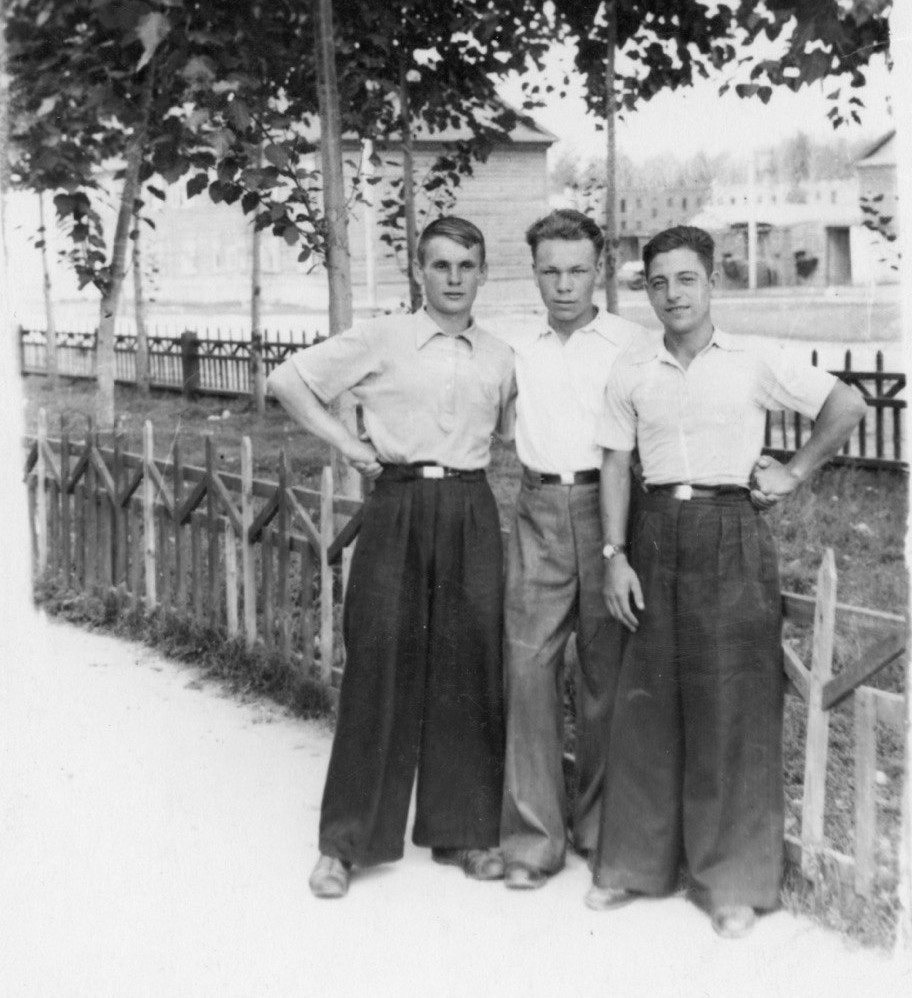
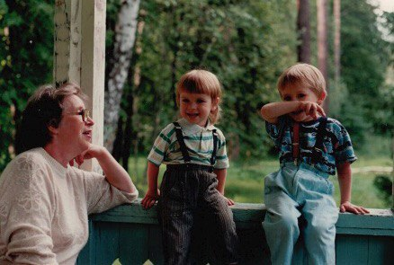

<!DOCTYPE html>
<html lang="en">
  <head>
    <meta charset="utf-8" />
    <meta name="viewport" content="width=device-width, initial-scale=1.0, maximum-scale=1.0, user-scalable=no" />

    <title>Семья в современном мире (практическое занятие)</title>
    <link rel="stylesheet" href="dist/reveal.css" />
    <link rel="stylesheet" href="dist/theme/black.css" id="theme" />
    <link rel="stylesheet" href="plugin/highlight/zenburn.css" />
	<link rel="stylesheet" href="css/layout.css" />
	<link rel="stylesheet" href="plugin/customcontrols/style.css">
	<link rel="stylesheet" href="plugin/chalkboard/style.css">


    <script defer src="dist/fontawesome/all.min.js"></script>

	<script type="text/javascript">
		var forgetPop = true;
		function onPopState(event) {
			if(forgetPop){
				forgetPop = false;
			} else {
				parent.postMessage(event.target.location.href, "app://obsidian.md");
			}
        }
		window.onpopstate = onPopState;
		window.onmessage = event => {
			if(event.data == "reload"){
				window.document.location.reload();
			}
			forgetPop = true;
		}

		function fitElements(){
			const itemsToFit = document.getElementsByClassName('fitText');
			for (const item in itemsToFit) {
				if (Object.hasOwnProperty.call(itemsToFit, item)) {
					var element = itemsToFit[item];
					fitElement(element,1, 1000);
					element.classList.remove('fitText');
				}
			}
		}

		function fitElement(element, start, end){

			let size = (end + start) / 2;
			element.style.fontSize = `${size}px`;

			if(Math.abs(start - end) < 1){
				while(element.scrollHeight > element.offsetHeight){
					size--;
					element.style.fontSize = `${size}px`;
				}
				return;
			}

			if(element.scrollHeight > element.offsetHeight){
				fitElement(element, start, size);
			} else {
				fitElement(element, size, end);
			}		
		}


		document.onreadystatechange = () => {
			fitElements();
			if (document.readyState === 'complete') {
				if (window.location.href.indexOf("?export") != -1){
					parent.postMessage(event.target.location.href, "app://obsidian.md");
				}
				if (window.location.href.indexOf("print-pdf") != -1){
					let stateCheck = setInterval(() => {
						clearInterval(stateCheck);
						window.print();
					}, 250);
				}
			}
	};


        </script>
  </head>
  <body>
    <div class="reveal">
      <div class="slides"><section  data-markdown><script type="text/template"><!-- .slide: class="drop" -->
<div class="" style="position: absolute; left: 0px; top: 0px; height: 700px; width: 960px; min-height: 700px; display: flex; flex-direction: column; align-items: center; justify-content: center" absolute="true">

# Урок 16. Семья в современном мире
</div>

<aside class="notes"><p><strong>У тебя есть миссия!</strong>
Сегодня тебе предстоит научиться рассказывать о своей семье. Но перед началом этой работы (а она будет действительно непростой) мы с тобой поговорим о некоторых вещах, которые обычно упускаются из виду, но, тем не менее, от этого они не перестают быть очень важными в жизни каждого из нас.</p>
</aside></script></section><section  data-markdown><script type="text/template"><!-- .slide: class="drop" -->
<div class="" style="position: absolute; left: 0px; top: 0px; height: 700px; width: 960px; min-height: 700px; display: flex; flex-direction: column; align-items: center; justify-content: center" absolute="true">


</div>

<aside class="notes"><p>Мы неоднократно с тобой уже говорили о том, что семья занимает особое место в нашей судьбе. В ней мы растем и взрослеем, именно она является нашей опорой и поддержкой, именно в семье мы чаще всего черпаем свои силы и положительные эмоции.</p>
</aside></script></section><section  data-markdown><script type="text/template"><!-- .slide: class="drop" -->
<div class="" style="position: absolute; left: 0px; top: 0px; height: 700px; width: 960px; min-height: 700px; display: flex; flex-direction: column; align-items: center; justify-content: center" absolute="true">


</div>

<aside class="notes"><p>Даже если по каким-то причинам человеку не повезло с семьей, он все равно ищет ее в любых других сообществах, в которых ему хорошо и комфортно. Например, семьей может стать родной класс или любимый коллектив. Так бывает. И это, конечно, не отменяет той огромной ценности, которые имеют кровные узы.</p>
</aside></script></section><section  data-markdown><script type="text/template"><!-- .slide: class="drop" -->
<div class="" style="position: absolute; left: 0px; top: 0px; height: 700px; width: 960px; min-height: 700px; display: flex; flex-direction: column; align-items: center; justify-content: center" absolute="true">


<aside class="notes"><p>Ученые-психологи не раз проводили исследования, которые показали, что человек чаще всего поступает в жизни так, как его научили в родной семье. <strong>Он перенимает у старших</strong> родственников манеру общения, взгляды, слова, пищевые привычки и прочее — <strong>все то, с чем изо дня в день сталкивался в кругу своих близких</strong>.</p>
</div></aside></script></section><section  data-markdown><script type="text/template"><!-- .slide: class="drop" -->
<div class="" style="position: absolute; left: 0px; top: 0px; height: 700px; width: 960px; min-height: 700px; display: flex; flex-direction: column; align-items: center; justify-content: center" absolute="true">


</div>

<aside class="notes"><p>Конечно, чуть позже, повзрослев и создав свои собственные семьи, люди начинают смотреть на мир иначе, но главные ценности они выносят из той среды, где они выросли, где прошло их детство.</p>
<p>Если бы не было передачи опыта между поколениями, то каждому новому поколению людей необходимо было бы заново открывать те законы, которые были открыты ранее их предшественниками. Представь, как было бы трудно первым людям изобретать каждый раз, например, колесо!</p>
</aside></script></section><section  data-markdown><script type="text/template"><!-- .slide: class="drop" -->
<div class="" style="position: absolute; left: 0px; top: 0px; height: 700px; width: 960px; min-height: 700px; display: flex; flex-direction: column; align-items: center; justify-content: center" absolute="true">


</div>

<aside class="notes"><p>Cейчас, когда существует целое море книг, а информация легко доступна каждому, <strong>передача опыта, ценностей, взглядов и знаний остается одной из главных миссий человека</strong>. Эта миссия есть и у тебя. Поэтому очень важно знать о своих предках как можно больше — дабы все хорошее, светлое и доброе, что они носили в своих сердцах, не ушло в небытие, а осталось в памяти следующих поколений.</p>
</aside></script></section><section  data-markdown><script type="text/template"><!-- .slide: class="drop" -->
<div class="" style="position: absolute; left: 0px; top: 0px; height: 700px; width: 960px; min-height: 700px; display: flex; flex-direction: column; align-items: center; justify-content: center" absolute="true">

**Подготовить рассказ о своей семье:**
1. отнестись со вниманием к тому, что рассказывают родители;
2. расспросить о подробностях, и записать рассказ.
3. приложить 1-3 фотографии.

<aside class="notes"><p><strong>Семейная история.</strong>
Наша задача будет подготовить рассказ о своей семье. В шестом классе мы проводили урок посвящённый подвигу и увидели, что человеку нужно иметь перед собой образы, к чему стремиться.</p>
</div></aside></script></section><section  data-markdown><script type="text/template"><!-- .slide: class="drop" -->
<div class="" style="position: absolute; left: 0px; top: 0px; height: 700px; width: 960px; min-height: 700px; display: flex; flex-direction: column; align-items: center; justify-content: center" absolute="true">


</div>

<aside class="notes"><p>Наверняка кто-то из старших рассказывал тебе о том, какими были твои родители в детстве, или ты знаешь интересные истории о своих близких родственниках: откуда они родом, чем занимались их предки, о чем мечтали, чего хотели достичь. Вспомни теперь какую-нибудь из этих историй и вкратце перескажи ее. Теперь подумай, что именно тебя привлекло в ней. Еще тебе стоит задуматься — на кого из этой истории ты хотел бы быть похожим и почему? Дедушка участвовал в операции, связанной с карибским кризисом. Тогда между США и СССР было противостояние за ядерное превосходство, а советский союз сотрудничал с Кубой.</p>
</aside></script></section><section  data-markdown><script type="text/template"><!-- .slide: class="drop" -->
<div class="" style="position: absolute; left: 0px; top: 0px; height: 700px; width: 960px; min-height: 700px; display: flex; flex-direction: column; align-items: center; justify-content: center" absolute="true">


</div>

<aside class="notes"><p>В рассказе о семье важна любая мелочь. Если внимательно относиться к мелочам, то можно очень многое узнать о человеке. Особенно это важно в том случае, когда ты берешь с него пример. Даже то, какие продукты любили есть твои предки, может рассказать о них много интересного и косвенно указать на их достаток, здоровье и даже нравственные ценности! А ведь <strong>ценности — это то, что передается от поколения к поколению в первую очередь</strong>.</p>
</aside></script></section><section  data-markdown><script type="text/template"><!-- .slide: class="drop" -->
<div class="" style="position: absolute; left: 0px; top: 0px; height: 700px; width: 960px; min-height: 700px; display: flex; flex-direction: column; align-items: center; justify-content: center" absolute="true">


</div>

<aside class="notes"><p>На фотографии мой прадед, Николай Андреевич, и прабабушка — Вера Федоровна. Так же я вижу своего дедушку (в то время он учился в судостроительном техникуме), и его старшего брата Якова с женой Анной и младших, брата Борю и сестру Любу. Двух сестер на фотографии нет, поскольку они обе уже были замужем. Мария уехала в Черкассы, Клавдия жила в Казани.</p>
</aside></script></section><section  data-markdown><script type="text/template"><!-- .slide: class="drop" -->
<div class="" style="position: absolute; left: 0px; top: 0px; height: 700px; width: 960px; min-height: 700px; display: flex; flex-direction: column; align-items: center; justify-content: center" absolute="true">

#### **О чем расскажут вещи <br> (фотографии, книги, письма)?**
</div>

<aside class="notes"><p>Прекрасным дополнением к рассказу о семье могут стать разные вещи, которые принадлежали твоим предкам, либо которыми пользуются те, кто живет вместе с тобой.
Изучение вещей может дать много информации об их хозяевах. Например, если в гардеробе моего дедушки была военная форма. Он ушел на пенсию в звании майора.</p>
</aside></script></section><section  data-markdown><script type="text/template"><!-- .slide: class="drop" -->
<div class="" style="position: absolute; left: 0px; top: 0px; height: 700px; width: 960px; min-height: 700px; display: flex; flex-direction: column; align-items: center; justify-content: center" absolute="true">


</div>

<aside class="notes"><p>Не менее интересным источником о ценностях семьи может стать и ваша библиотека. Даже сейчас, когда множество текстов можно найти в интернете и при этом не покупать книг, газет и журналов, почти в каждом доме найдётся что-нибудь распечатанное на бумаге. Что это будет — научная литература или энциклопедии, небольшие веселые книжки или огромные собрания романов известных писателей, красочные детские журналы или папки с чертежами и таблицами? Как правило, книги и альбомы по искусству стоят на полках у людей с развитым художественным вкусом, а, скажем, романы известных авторов прошлого любят читать те, кто часто задумывается о смысле жизни, внимателен к окружающему миру.</p>
</aside></script></section><section  data-markdown><script type="text/template"><!-- .slide: class="drop" -->
<div class="" style="position: absolute; left: 0px; top: 0px; height: 700px; width: 960px; min-height: 700px; display: flex; flex-direction: column; align-items: center; justify-content: center" absolute="true">


</div>

<aside class="notes"><p>Фотографии — особая история. С одной стороны, на них сами по себе зафиксированы яркие моменты жизни. А с другой стороны, эти изображения могут тоже рассказать немало интересного о тех, кто на них запечатлен. </p>
<p>А на фотографии моему деду лет 17. Он тогда учился в судостроительном техникуме. Справа и слева - закадычные друзья.</p>
</aside></script></section><section  data-markdown><script type="text/template"><!-- .slide: class="drop" -->
<div class="" style="position: absolute; left: 0px; top: 0px; height: 700px; width: 960px; min-height: 700px; display: flex; flex-direction: column; align-items: center; justify-content: center" absolute="true">


</div>

<aside class="notes"><p>На фотографиях могут быть также запечатлены различные традиции — например, совместное празднование Нового года, прогулки, походы в кино и другие моменты проведенного вместе времени.
Кстати, общие праздники и дела — это тоже про традицию. Человек не может существовать отдельно от других людей, поэтому в совместной деятельности, может родиться подлинная человеческая жизнь — дружба, понимание, взаимопомощь, поддержка и любовь…</p>
</aside></script></section><section  data-markdown><script type="text/template"><!-- .slide: class="drop" -->
<div class="" style="position: absolute; left: 0px; top: 0px; height: 700px; width: 960px; min-height: 700px; display: flex; flex-direction: column; align-items: center; justify-content: center" absolute="true">

**Общее дело — лучший <br>способ передачи опыта.**
</div>

<aside class="notes"><p>Общее дело — самый лучший способ передачи опыта, когда он передается не через книги или видеозаписи, а напрямую, живым словом, примером и даже взглядом. И именно поэтому семья — это наиболее предпочтительная среда, в которой лучше всего выполняется наша главная миссия.</p>
</aside></script></section><section  data-markdown><script type="text/template"><!-- .slide: class="drop" -->
<div class="" style="position: absolute; left: 0px; top: 0px; height: 700px; width: 960px; min-height: 700px; display: flex; flex-direction: column; align-items: center; justify-content: center" absolute="true">

Материалы, являются интеллектуальной собственностью «Клевер Лаборатории».<br> [Учебный текст к уроку ОДНКНР для 5 класса](https://clever-lab.pro/mod/glossary/view.php?g=8)
</div></script></section><section  data-markdown><script type="text/template"></script></section></div>
    </div>

    <script src="dist/reveal.js"></script>

    <script src="plugin/markdown/markdown.js"></script>
    <script src="plugin/highlight/highlight.js"></script>
    <script src="plugin/zoom/zoom.js"></script>
    <script src="plugin/notes/notes.js"></script>
    <script src="plugin/math/math.js"></script>
	<script src="plugin/mermaid/mermaid.js"></script>
	<script src="plugin/chart/chart.min.js"></script>
	<script src="plugin/chart/plugin.js"></script>
	<script src="plugin/customcontrols/plugin.js"></script>
	<script src="plugin/chalkboard/plugin.js"></script>

    <script>
      function extend() {
        var target = {};
        for (var i = 0; i < arguments.length; i++) {
          var source = arguments[i];
          for (var key in source) {
            if (source.hasOwnProperty(key)) {
              target[key] = source[key];
            }
          }
        }
        return target;
      }

	  function isLight(color) {
		let hex = color.replace('#', '');

		// convert #fff => #ffffff
		if(hex.length == 3){
			hex = `${hex[0]}${hex[0]}${hex[1]}${hex[1]}${hex[2]}${hex[2]}`;
		}

		const c_r = parseInt(hex.substr(0, 2), 16);
		const c_g = parseInt(hex.substr(2, 2), 16);
		const c_b = parseInt(hex.substr(4, 2), 16);
		const brightness = ((c_r * 299) + (c_g * 587) + (c_b * 114)) / 1000;
		return brightness > 155;
	}

	var bgColor = getComputedStyle(document.documentElement).getPropertyValue('--r-background-color').trim();
	var isLight = isLight(bgColor);

	if(isLight){
		document.body.classList.add('has-light-background');
	} else {
		document.body.classList.add('has-dark-background');
	}

      // default options to init reveal.js
      var defaultOptions = {
        controls: true,
        progress: true,
        history: true,
        center: true,
        transition: 'default', // none/fade/slide/convex/concave/zoom
        plugins: [
          RevealMarkdown,
          RevealHighlight,
          RevealZoom,
          RevealNotes,
          RevealMath.MathJax3,
		  RevealMermaid,
		  RevealChart,
		  RevealCustomControls,
		  RevealChalkboard, 
        ],


    	allottedTime: 120 * 1000,

		mathjax3: {
			mathjax: 'plugin/math/mathjax/tex-mml-chtml.js',
		},
		markdown: {
		  gfm: true,
		  mangle: true,
		  pedantic: false,
		  smartLists: false,
		  smartypants: false,
		},

		mermaid: {
			theme: isLight ? 'default' : 'dark',
		},

		customcontrols: {
			controls: [
				{ icon: '<i class="fa fa-pen-square"></i>',
				title: 'Toggle chalkboard (B)',
				action: 'RevealChalkboard.toggleChalkboard();'
				},
				{ icon: '<i class="fa fa-pen"></i>',
				title: 'Toggle notes canvas (C)',
				action: 'RevealChalkboard.toggleNotesCanvas();'
				},
			]
		},
      };

      // options from URL query string
      var queryOptions = Reveal().getQueryHash() || {};

      var options = extend(defaultOptions, {"width":960,"height":700,"margin":0.04,"controls":true,"progress":false,"slideNumber":true,"transition":"zoom","transitionSpeed":"normal"}, queryOptions);
    </script>

    <script>
      Reveal.initialize(options);
    </script>
  </body>

  <!-- created with Advanced Slides -->
</html>
